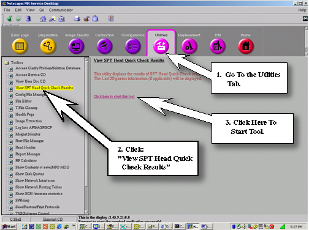

- 00000018WIA30229F20GYZ
- id_131060111.12
- Jul 5, 2019 10:25:10 PM
SPT Head Quick Check
Introduction
The System Performance Test (SPT) provides a means of quickly verifying that all critical parameters that affect image quality are within specification. The data generated by SPT are useful for both local and global trending and for additional automated interpretation by processes that are not part of SPT.
Table 1 identifies the parameters SPT evaluates (critical to image quality) that are included in the Head Quick Check. The Head Quick Check uses only the DQA-III Phantom in the head coil. It is intended to be used daily by the customer as a fast verification of the basic functionality of the scanner. The time for data collection and processing is approximately seven minutes. For TwinSpeed, each GradMode is tested separately.
| Parameters | In Quick Check |
| Center Frequency | Yes |
| Gradcal | Yes |
| Z-isocenter | Yes |
| SNR | Yes (See Note below.) |
SNR will be reported via the Quick Head Check Viewer. However, this is for customer trending purposes only.
SPT Head Quick Check Procedure
To set up and run SPT Head Quick Check, three general tasks must be completed:
-
If in application mode, cancel out of any previous exams, and click on End Exam.
-
Position the DQA Phantom in the head coil and establish a landmark.
-
Invoke SPT Head Quick Check from the Image Quality tab on the CSD.
Phantom Positioning for SPT Head Quick Check
-
Place the Head Coil on the patient table.
-
If using the Signa classic head coil and DQA-III Phantom, the phantom fits in the head coil only one way.
-
Make sure the small tabs on one end flange of the DQA-III Phantom go into the head coil first.
Figure 1. DQA III Phantom Orientation 
-
Place the DQA-III Phantom in the head coil on the patient table.
Figure 2. DQA-III Phantom Position in the Head Coil 
-
-
If using the newer Split Head Coil, place the coil on the patient table.
-
The split head coil phantom fits in the new head coil only one way.
Figure 3. New Phantom Orientation 
-
Place the phantom in the head coil as shown in the figure below.
Figure 4. Placement of Phantom 
-
-
Landmark on the axial line of the DQA-III Phantom in the head coil.
Invoking SPT Head Quick Check
Test and system functionality may be adversely affected if the previous exam is not terminated. Click on End Exam to terminate any previous exam. (It is not necessary to select New Pt, as SPT automatically enters the scan protocol when it is invoked via the MR Tools menu.)
-
Select SPT Head Quick Check from the Image Quality tab on the Common Service Desktop (CSD).
-
To start SPT Head Quick Check, click on the link: Click here to start the tool shown in the figure below.
Figure 5. Start SPT Head Quick Check 
-
Software will prompt for old or new head coil and DQA Phantom. The color of the phantom will depend on the system type (1.5T, 3.0T or 3T/94) shown in the figure below. Select coil type, and click Start.
Figure 6. Old and New Head Coils 
-
Choose the test purpose.
-
Only applicable tests will be preselected. For TwinSpeed, SPT Head Quick Check should be run for both GradModes.
Figure 7. System Performance Test Menu 
-
Click the Test Purpose, Name pull-down menu, and select a purpose for running the test, for example: Quality Assurance.
See Figure 7.
SPT Options/Status
Test Options
Test option for clinical users is limited to Quick Check. After options are chosen and the test is started, data collection and processing proceed without further user input. (It is not necessary to select protocols, pre-scan, scan, reposition phantoms, or initiate data analysis processes while SPT is running.)
For TwinSpeed, when both GradModes are selected, the range of tests are run first with the Whole-Body Gradient and then with the Zoom Gradient. With multiple passes, both GradModes are completed before moving onto the next pass.
Test Status
When an SPT run is started, a status window displays indicating all selected test options.
-
As each individual test is run, a message displays in this window indicating what data is being collected or processed.
-
Start time and estimated completion time are also displayed in the status window.
Note:For TwinSpeed, the message window shows the GradMode currently being used.
-
SPT can be aborted at any time by selecting Quit SPT. If the test is aborted before completion, valid test results created prior to quitting are preserved.
Viewing SPT Head Quick Check Results
To view results of SPT Head Quick Check, refer to Figure 8:
-
Select the Utilities icon on the CSD.
-
Select View SPT Head Quick Check Results in the left navigation panel.
-
Click on the link: Click here to start this tool.

The screen shown in the figure below displays data from the last 20 passes of the Head Quick Check.

SPT Troubleshooting
When to Reboot
If there is a stop scan condition, such as a hardware error during a run of SPT, reboot the system. (This condition may be caused by the test software being out of sync with the scan software.) To reboot:
-
Right click on the desktop wallpaper area, select Service Tools from the root menu, and select Logout. When Signa logout is complete, a login screen displays. (It is not necessary to perform a complete reboot.)
-
Restart the system software by double clicking on the Signa icon, enter the password adw2.0, and press Enter. Allow initialization to be fully completed before any user interaction.
-
Continue with the SPT test.
Utilities for SPT
There are four useful utilities when using SPT. Refer to the following for a short description of each:
-
Exit SPT Window: If a problem occurs when exiting SPT and nothing else works, click on Exit from the window function pull-down menu (upper left corner of SPT window). This closes all SPT windows, and stops all processes that run the SVAT scripting.
-
Sptreset: If a problem occurs when exiting SPT and the system seems to be in an unusual configuration, open a C-shell and type: cd /usr/g/service/cclass/spt, press Enter, then type: sptreset and press Enter. This returns all files and configuration values to their correct position.
-
Prune: Prune is used to remove trend file entries.
-
T File Cleanup: T File Cleanup is a file space management tool used to clean up the /usr/g/service/data directory. See "T" File Cleanup for information on how to run it.
Problems with SPT Full Test and Head Quick Check
Problem 1: There can be no duplicate exam numbers when running SPT.
Solution 1: Before running SPT, go into the Browser desktop and remove any duplicate exam numbers.
Problem 2: If the MRConfig file size exceeds 16383, the SPT Head Quick Check will crash (more likely to occur in mobiles). To verify the file size:
-
Open a C-shell on the CSD.
-
Type: cd /w/config and press Enter.
-
Type ls -l MR* and press Enter. The figure below shows an example of the files.

Solution 2: Delete two lines of comments to fix the problem as follows:
-
Type: gedit MRconfig.cfg and press Enter.
-
Delete any two lines that begin with # (comment lines).
-
Save and Exit the file using the jot toolbar.